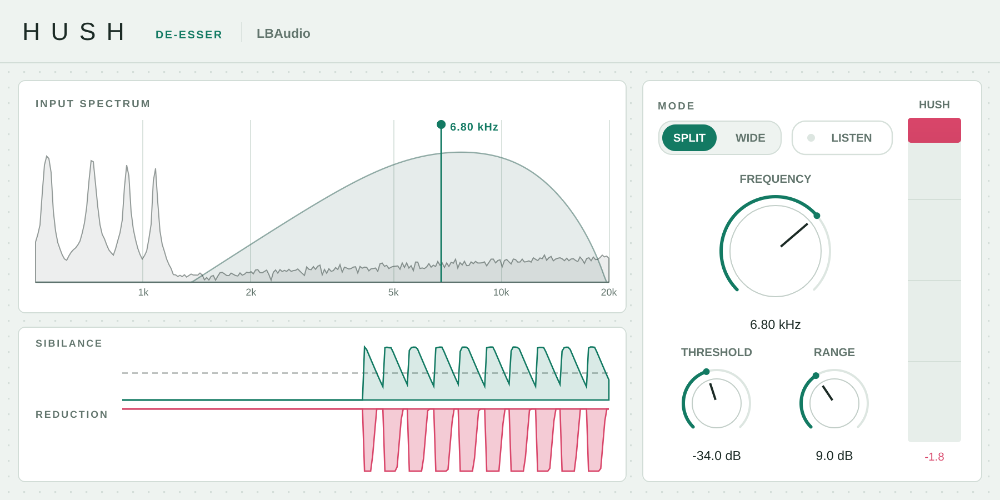

De-esser plugin · VST3 & AU
Hushby LBAudio
Tames harsh S sounds and hi-hat sizzle the moment they happen, and shows you exactly which ones it caught.
Instant download. Any local VAT is worked out at checkout. Or get the FX 5 in one bundle.
- VST3
- AU
- Windows
- macOS
- Linux
- Zero latency

Hear it on a real track
Part of an LBAudio track, run through Hush at three settings. Each version is matched to the original's loudness. Listen to the S sounds and the hi-hats as you switch: the rest of the mix stays where it is.
Only the loudest S sounds and hi-hat hits are pulled down; everything else passes untouched.
Watch it work
The real plugin on screen, on one of our tracks. Every before-and-after is matched in loudness, so you hear what Hush does, not a change in volume.
See every S it catches
The spectrum shows where the harshness lives. The history underneath draws the sibilance level and every cut Hush makes, so you can see it only works when it should.
Split or wide
Split turns down only the band around the S, leaving the body of the voice untouched. Wide turns the whole signal down for a gentler result.
Listen
Hear only the band Hush is listening to, and sweep Frequency to find the harshness in seconds.
Zero latency
Nothing for your DAW to compensate, so you can record through it and use it on live vocals.
The controls
Five controls. Double-click any knob to reset it, or click a value and type one in.
| Control | Range | What it does |
|---|---|---|
| Frequency | 2 to 12 kHz | The centre of the band Hush listens to. Most S sounds sit between 5 and 8 kHz. |
| Threshold | −60 to 0 dB | How loud the sibilance has to get before Hush turns it down. |
| Range | 0 to 24 dB | The most Hush will ever turn down, so it can never swallow a word. |
| Mode | Split / Wide | Split turns down only the high band. Wide turns down the whole signal. |
| Listen | On / off | Plays only the band Hush is listening to, so you can find the right frequency. |
Where to start
Four starting points. Set these, then adjust by ear.
-
Lead vocal
Split · 6–7 kHz · range 6–8 dB
Set Threshold so the reduction only moves on the S sounds, not on every word.
-
Breathy, close-mic vocal
Split · 8–10 kHz · range 6–10 dB
Aim higher when the harshness sits above the S, in the breath and air.
-
Bright hi-hats
Split · 9–11 kHz · range 4–6 dB
Softens the sizzle of a bright hi-hat loop without dulling the rest of the beat.
-
Mix bus polish
Wide · 6 kHz · range 2–3 dB
A light touch on the whole mix that only moves on the harshest moments.
Specs
One download for each system. No iLok, no account and no activation.
- Formats
- VST3 on Windows, macOS and Linux. Audio Unit (AU) on macOS.
- Windows
- Windows 10 or later, 64-bit.
- macOS
- macOS 10.13 or later. Runs natively on Apple Silicon and Intel.
- Linux
- 64-bit x86 (x86-64).
- Hosts
- Any DAW that loads VST3 or AU plugins, such as Ableton Live, FL Studio, Cubase, Reaper, Studio One, Bitwig and Logic Pro. Not available for Pro Tools (AAX).
- Latency
- None: zero samples.
- Frequency
- 2 to 12 kHz.
- Modes
- Split and Wide, plus Listen.
- Channels
- Mono or stereo.
Questions
Anything else? Email support@lbaudio.co.uk.
How do I install it?
Unzip the download and copy Hush.vst3 into your VST3 folder: C:\Program Files\Common Files\VST3 on Windows or ~/Library/Audio/Plug-Ins/VST3 on a Mac. Logic users also copy Hush.component into ~/Library/Audio/Plug-Ins/Components. Then rescan plugins in your DAW. The zip includes these steps in INSTALL.txt.
How many computers can I use it on?
All the computers you personally own or use. See the licence agreement for the details.
Can I use it on commercial releases?
Yes. The music you make with Hush is entirely yours, with no royalties or credits owed.
Do updates cost anything?
No. Updates to Hush version 1 are free for everyone who bought it.
What if it doesn't work on my system?
Get in touch within 14 days of buying. If we can't get it working, you get a full refund. See the refund policy.
Does it work in Pro Tools?
Not yet. Pro Tools only loads AAX plugins, and Hush is VST3 and AU.
How do I find the right frequency?
Turn on Listen and sweep Frequency until the S sounds jump out at you. Then turn Listen off and lower Threshold until Hush just catches them.
Hush
VST3 & AU for Windows, macOS and Linux. Instant download. Or get the FX 5 in one bundle.